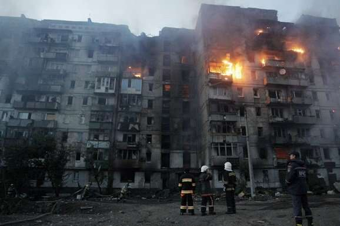

За добу через російські обстріли загинув житель Донеччини, є поранені ще в двох областях
Внаслідок російських обстрілів загинув один житель Донецької області, повідомив голова обласної військової адміністрації Вадим Філашкін 22 квітня.
«За 21 квітня росіяни вбили одного жителя Донеччини — в Українську. Ще шестеро людей в області за добу дістали поранення», – написав він.
Також через обстріли російських військ є постраждалі в Харківській і Херсонській областях, заявляє місцева влада.
«21:00 місто Харків. Внаслідок ракетного обстрілу по місту постраждав 19-річний цивільний», – заявив голова Харківщини Олег Синєгубов.
Він додав, що під артилерійський і мінометний вогонь потрапили близько 15 населених пунктів області. Зокрема, у Вовчанську обстріл із реактивної системи залпового вогню пошкодив будинок.
За даними очільника Херсонської області Олександра Прокудіна, російська армія напередодні обстріляла Нововоронцовку, Антонівку та місто Херсон. Також під вогнем опинилися Козацьке, Берислав і Новоберислав.
Обстріли пошкодили три багатоповерхівки та три приватні будинки, голова області також повідомляє про влучання в медичний і освітній заклади, дитячий садок, приватні автомобілі та газогін.
«Через російську агресію три людини дістали поранення, з них – одна дитина», – заявив Прокудін.
Про російський удар по Одещині заявив голова області Олег Кіпер. Зокрема, дрони-камікадзе поцілили по фермі, пошкодивши складські будівлі та сільськогосподарську техніку. Ніхто не постраждав.
Російські військові регулярно з різних видів озброєння – ударними БПЛА, ракетами, КАБами, РСЗВ – атакують українські регіони. Попри докази і свідчення, Москва від початку повномасштабного вторгнення заперечує цілеспрямовану атаку на цивільних.
Моніторингова місія ООН з прав людини в Україні верифікували дані про загибель в Україні 10 810 цивільних людей, поранення 20 556 – від початку повномасштабного вторгнення РФ. В організації припускають, що кількість жертв серед цивільних осіб є набагато вищою.
#СТОП ПУТІН
